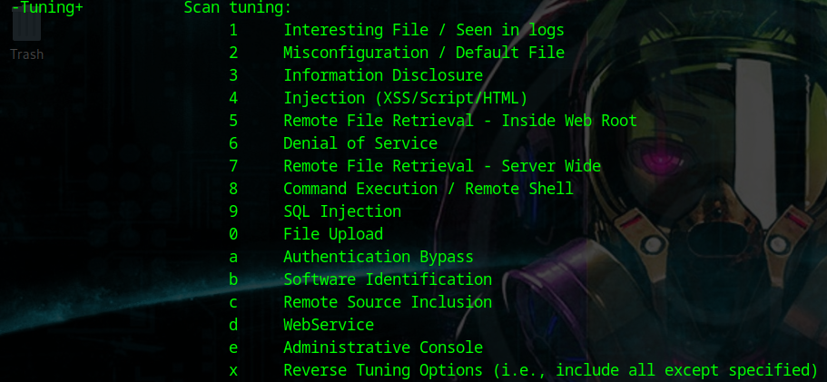
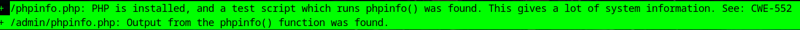
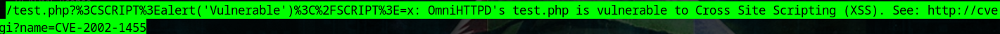
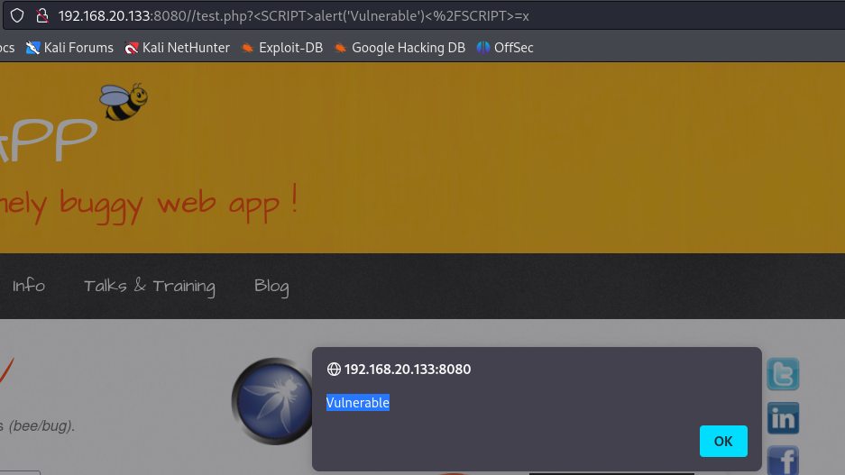
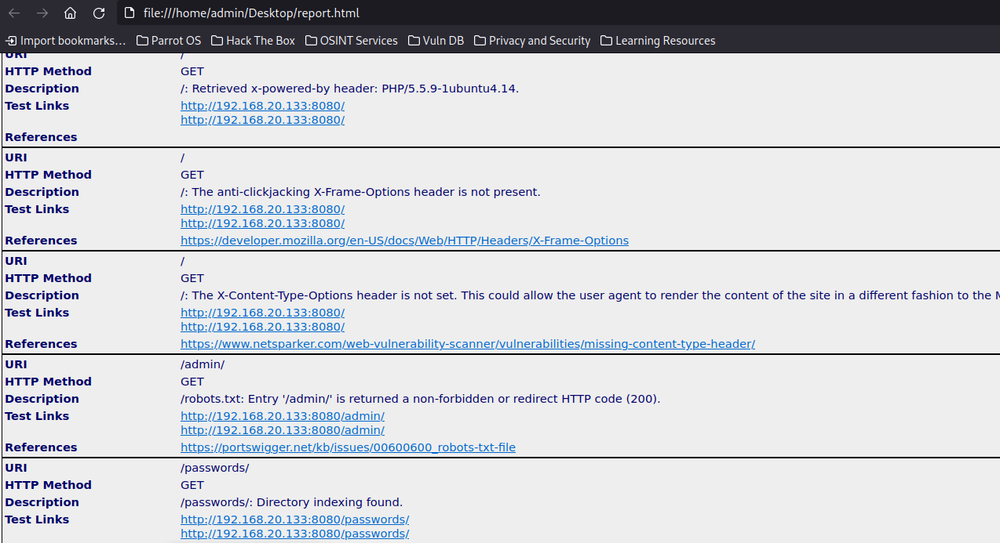
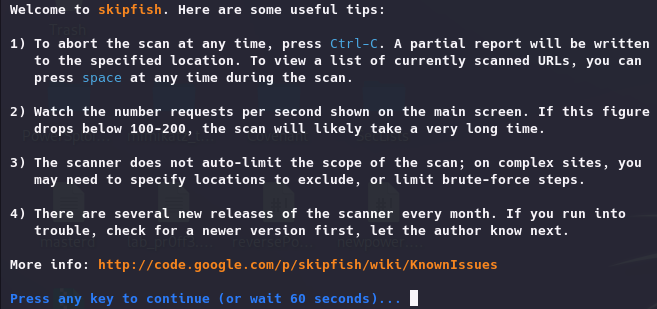
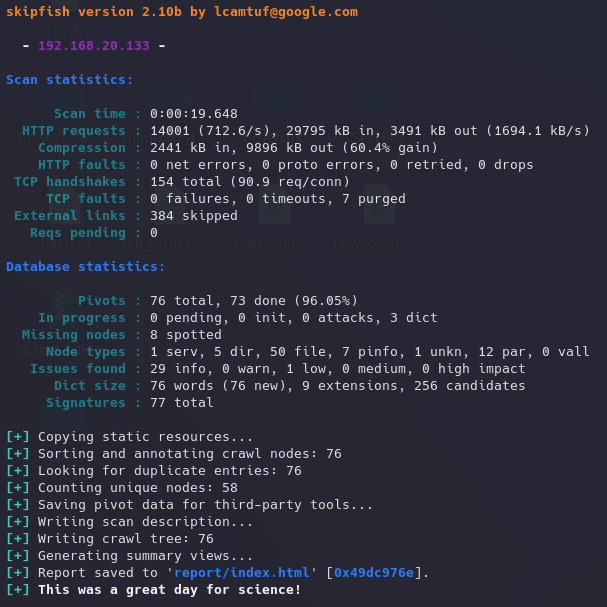
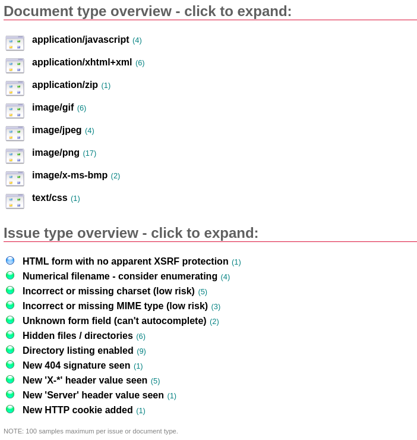

NIKTO y SKIPFISH:
https://github.com/sullo/nikto
En Kali y Parrot viene por defecto.

Es sencilla de utilizar, indicamos el host y un output file.
Permite también análisis autenticado aunque funciona medio regular.
Vamos a analizar la misma web que tenemos virtualizada como antes.
nikto -host http://192.168.20.133:8080 -o report.html -Format html

Informa de errores comunes como dejar habilitado el phpinfo por default

Incluso algunas vulnerabilidades no tan obvias como un crossite scripting complejo.

Podemos abrir el reporte con todo lo que ha encontrado.

Si vamos a otra web vulnareble de nuestra red: http://192.168.20.133:1336/index.php
Estas herramientas empiezan un proceso de crawling o spidering y después analizan los apartados que encuentran y tienen acceso ya que si por ejemplo se requiere autenticación no van a poder acceder.
El funcionamiento es prácticamente el mismo.
Se pueden modificar las opciones para el performance, autenticación, etc aunque páginas con autenticación es más versatil el proceso manual en ZapProxy.
skipfish -o report http://192.168.20.133:8080



Todas estás herramientas son muy intrusivas por lo que si hay medidas de seguridad entre medias posiblemente seamos detectados.